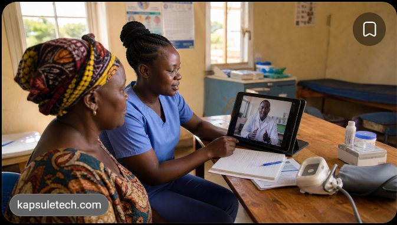
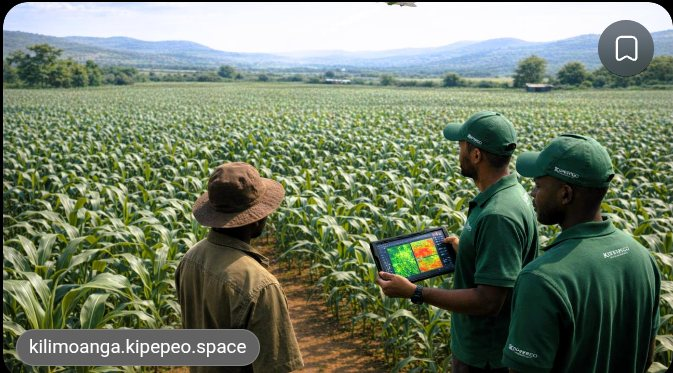
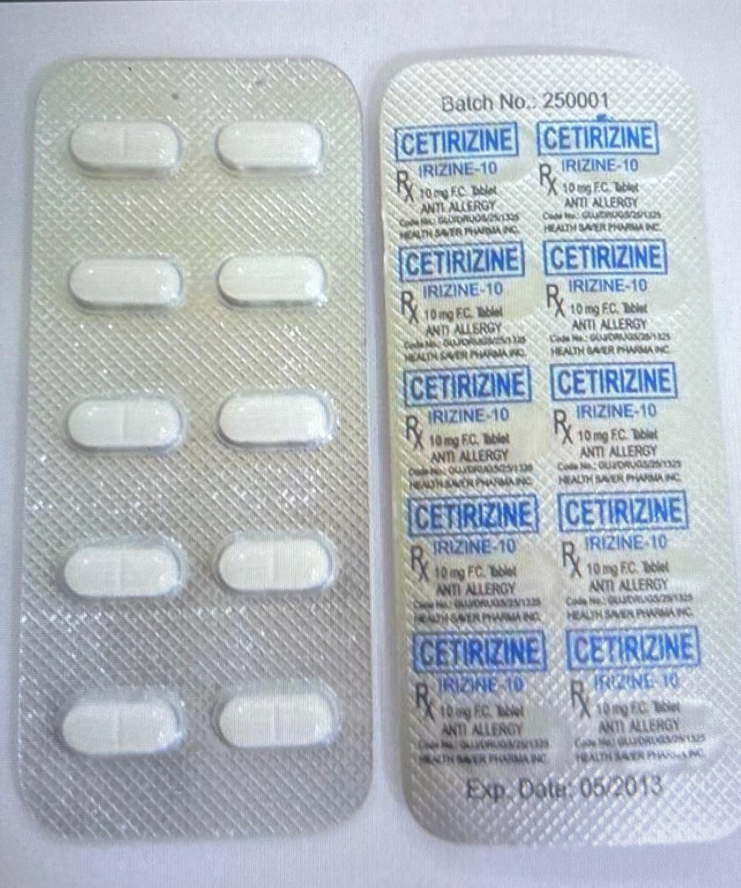
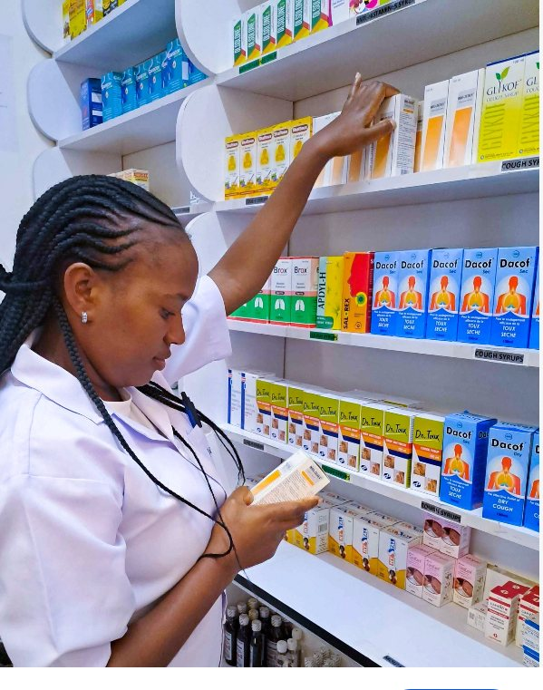
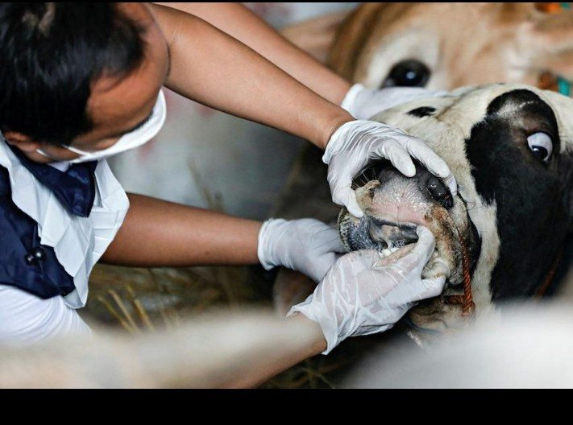
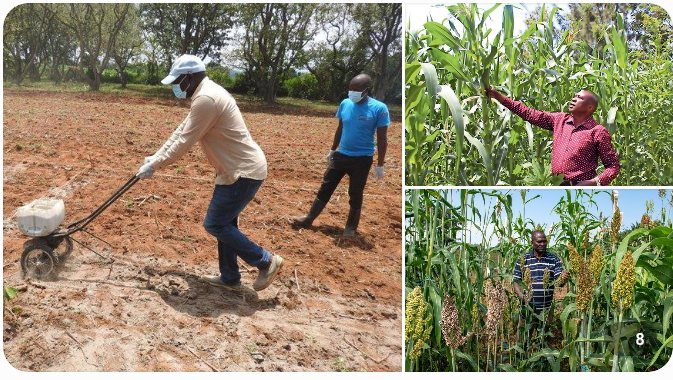
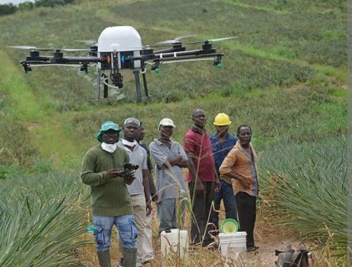
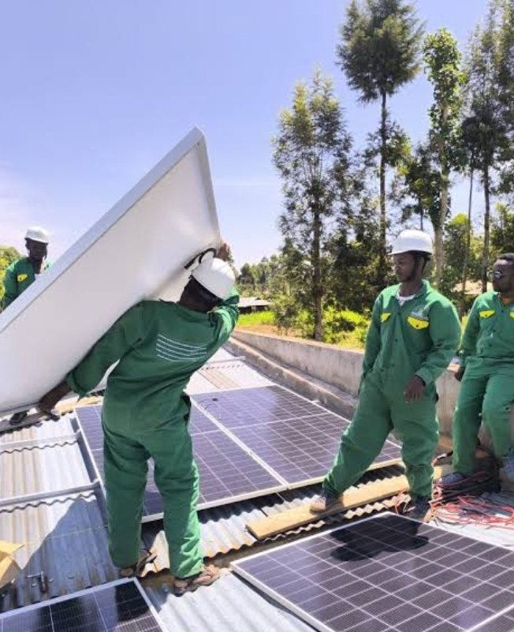
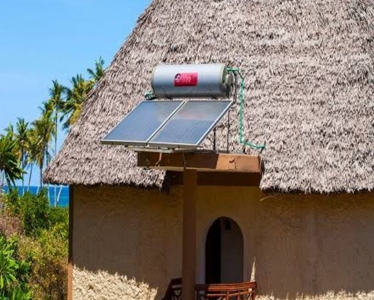

AI Boom Sends RAM Prices Soaring, Leaving Students Worried About Affordable Computing
By Briner Ndelema · THE KNIGHTS
A student hoping to make their laptop faster before the next semester may have to dig deeper into their pockets. Across the global technology market, prices of Random Access Memory (RAM) are rising, making computer upgrades increasingly expensive. Behind the growing costs is an unexpected contributor: the artificial intelligence boom, which is driving demand for computer memory and putting pressure on supplies.
RAM, commonly known as Random Access Memory, is one of the most important components of a computer. It temporarily stores information that a device needs to access quickly, allowing users to open applications, browse the internet and work on several programmes simultaneously. When a computer has insufficient RAM, it may become slow, especially when running demanding applications.
Artificial intelligence data center servers illustrating the technology driving increased demand for specialized memory.
However, this essential component is becoming more expensive as manufacturers struggle to meet growing global demand. One of the biggest reasons is the rapid expansion of artificial intelligence. AI systems require powerful data centres equipped with specialised memory to process enormous amounts of information. As technology companies invest billions in AI infrastructure, manufacturers are increasingly prioritising high-performance memory used in servers.
According to Deloitte's July 2026 analysis, the cost of DRAM used in AI servers roughly doubled during the first quarter of 2026, with further price increases anticipated. The report highlights how growing demand and limited production capacity are contributing to pressure in the memory market.
TrendForce, a technology market research firm, also projected on September 30, 2026, that conventional DRAM contract prices would increase by 10–15 per cent in the fourth quarter compared with the previous quarter. This suggests that the pressure is not limited to specialised AI memory but is also affecting the wider computer memory market.
Explaining the situation, a semiconductor industry expert could help clarify why the shortage is difficult to resolve quickly. As one industry analyst explains: "Memory production requires specialised manufacturing facilities and significant investment. Even when manufacturers decide to increase production, building new capacity takes time. This means supply may struggle to catch up with demand."
The effects are increasingly relevant to ordinary computer users, particularly university students who depend on laptops for research, assignments, online learning and communication.For students, a laptop is more than an electronic device; it is an important academic tool. Rising RAM prices could make upgrading older computers more difficult, especially for those already working with limited budgets.
A university student in Rongo, for example, could describe the financial pressure this way."I depend on my laptop for assignments and research, but when the cost of upgrading it goes up, it becomes difficult to keep it working efficiently without spending money I had planned for other needs."
Beyond universities, computer repair shops, small businesses and electronics retailers could also feel the impact through higher purchasing and replacement costs. If manufacturers and retailers pass these expenses to consumers, the price of some computers and other electronic devices could rise.
The situation raises an important question about the future of technology: as companies race to make artificial intelligence more powerful, what happens to ordinary consumers who still depend on affordable computers?
Artificial intelligence promises to transform education, communication and business. But its growing appetite for computer memory reveals another side of technological progress:.while machines are becoming more advanced, the basic tools people need to use them may be becoming less affordable.
Stop Charging Your Phone to 100%: The Battery Myth Killing Your Phone
By Fredrick Ochieng · THE KNIGHTS
We have all been trained to worship 100%Full tanks,full Your phone says "charge to 100%" and you feel accomplished.In Ion lithium physics,you just hurt your phone
(An image of an overcharged smartphone with temperature rising)
.
A lithium ion cells live by voltage.At 0% it sit at 3.0%.At 100.0v it is squuezed at 4.0V .That high voltage is stressful .It oxidizes the electrolyte and crashes the nickel manganese cobalt cathode.Every full charge is a micro injury.
Heat is the accomplice, charging to 100% and leaving it plugged in overnight keeps the battery at high voltage and high temperature 35—40 degree celcius for six That's the worse combination for longevity.This is why Apple and Samsung now include "Optimized battery charging to 80%.There for dsgh fuhsmkare not saving electricity,they are saving electricity.
Then there is the calender aging.Even if one doesn't use their phone ,a battery stored at 100% degrades faster than one stored one at 40%.One year ago 100% at 25% is equal to 4% loss.Your drawer is killing your spare phone.
Dr. Peter Oyoo on what normal students in Rongo University should do,"Stop thinking like a fuel tank.Think like a rubber band.Streching it to max everytime weakens it.The sweet spot for lithium ion is ,20%-80% rule . Charge to 80% for daily use.let it drop to 20% then charge.Always used the 2-80 rule.Only let it go to 100% when you are traveling to upcountry."
The smartest battery is not a full one.It a half full one
Artificial Intelligence and Its Role in Modern Society
By Lynette Mwendwa · THE KNIGHTS
Artificial Intelligence (AI) is a branch of computer science that focuses on developing machines and computer systems capable of performing tasks that normally require human intelligence.
Examples include understanding language, recognizing images, analyzing information and solving problems. AI is increasingly becoming important in education, healthcare, agriculture, communication and business.

A healthcare worker in Rongo uses AI technology to support disease diagnosis
Applications of Artificial Intelligence; AI can help medical professionals analyze medical images, identify patterns in patient information and support disease diagnosis. AI-powered learning platforms help students access educational materials, practice skills and receive personalized learning support. Farmers can use AI technologies to monitor crops, identify plant diseases and improve agricultural production. Communication; AI supports language translation, speech recognition and automated customer services.

Farmers in RONGO use AI powered mobile application to improve farming practices.
Advantages of Artificial Intelligence; Saves time and increases efficiency. Helps analyze large amounts of information. Supports medical research. Improves access to educational resources. Helps automate repetitive tasks.
Challenges of Artificial Intelligence; some jobs may be affected by automation. AI systems can produce inaccurate information. Personal data may be exposed or misused.AI can reproduce bias in its training information. Overdependence on technology can reduce independent thinking.
Artificial Intelligence is transforming modern society by improving how people work, learn and communicate. However, responsible use is necessary to reduce its risks and maximize its benefits.
Artificial intelligence is transforming healthcare, education, and agriculture.
Students and teachers embrace AI powered learning tools to improve education.
The Smartphone Sleep Paradox: Blue Light, Melatonin and Your Brain
By Maximilah Achando · THE KNIGHTS
Late-night screen exposure emits short-wavelength blue light that disrupts natural sleep hormone production.
Scrolling through social media feeds, replying to late-night messages, or streaming videos in bed has become a near-universal bedtime ritual. Yet while smartphones keep us connected around the clock, our neurobiology pays a steep, hidden price. Modern LED screens emit high concentrations of short-wavelength blue light (peaking around 460 to 480 nanometers). When this light hits specialized photoreceptors in the human retina called intrinsically photosensitive retinal ganglion cells (ipRGCs), it sends an immediate alertness signal to the brain's master clock—the suprachiasmatic nucleus. Convinced that the sun is still overhead, the brain halts the pineal gland’s secretion of melatonin, the critical hormone that lowers core body temperature and signals the body that it is time to sleep.
The consequences extend far beyond feeling groggy the next morning. Chronic melatonin suppression delays sleep onset and reduces the duration of Rapid Eye Movement (REM) and deep slow-wave sleep—the restorative stages essential for memory consolidation, metabolic regulation, and immune repair.
“Evolutionarily, our eyes associate bright, blue-enriched light with daytime,” says Prof. Sarah Mwangi, a neurobiologist and circadian rhythm specialist. “When we expose ourselves to screens right before bed, we effectively phase-delay our internal biological clock. Even if you fall asleep quickly out of sheer exhaustion, your sleep architecture remains fragmented, leaving the brain deprived of deep recovery and increasing long-term risks for anxiety, impaired focus, and metabolic strain.”
To break the cycle without abandoning modern technology, chronobiologists recommend a multi-layered approach to digital hygiene. Activating built-in night-shift or warm-spectrum display modes after sunset reduces blue-wavelength intensity, though dimming overall screen brightness is equally vital. Most effectively, establishing a strict "digital sunset"—powering down screens at least 45 to 60 minutes before bedtime and replacing scrolling with low-light activities like reading print books—allows melatonin levels to rise naturally, restoring the deep, uninterrupted rest the human brain requires.
When the first Lipa Polepole phone appeared in the markets of Nairobi and Kenya at large, few people believed it would change anything.
It was not the most beautiful phone on the shelf. It did not have the sharpest camera, the largest memory, or the most fashionable brand name. Its screen was modest, its design simple, and its features were aimed more at ordinary needs than luxury.
But its promise was powerful:
“Take the phone today. Pay for it slowly.”For thousands of people who could not afford to pay the full price at once, the idea sounded like an opportunity.
Among them was Amina, a young woman who sold clothes at a small stall near a busy bus station. She had always wanted a smartphone. With one, she believed she could advertise her clothes online, communicate with customers, receive digital payments, and keep in touch with her brother, who worked in another town.
A happy client holding one of well know mkopa lipa polepole phone
The problem was that her income changed every day. Some days she sold many clothes. On other days, she barely made enough to buy food.
“I cannot pay for the whole phone today,” she told the salesman.
“You do not have to,” he replied. “You only need to make a small payment now, then continue paying little by little.”
Amina signed the agreement and carried the phone home.at first, the device seemed to open a door into a new world. She created a social media page for her business and posted pictures of dresses, shoes, and handbags. Customers began sending messages. Some asked her to deliver clothes to their homes. Others paid through mobile money.
Within a few months, Amina’s business had grown.
“I would never have reached these customers without this phone,” she told her friend Zawadi. “It is not just a phone anymore. It is part of my business.”
Amina was not alone. Students used Lipa Polepole phones to attend online lessons and search for information. Motorcycle riders used them to find customers. Farmers checked market prices and weather forecasts. Parents used them to communicate with relatives and access government services.
For many people, the phone became a symbol of inclusion. It allowed those with limited savings to participate in the digital economy without waiting years to afford a device.
The company behind the phones celebrated the growing number of customers. Advertisements showed smiling families, successful entrepreneurs, and young people using technology to improve their lives.
The message was clear: technology should not belong only to people with large bank accounts,but beneath the excitement, another story was beginning,not everyone read the payment agreement carefully. Some customers focused only on the small initial payment and ignored the total amount they would eventually pay. A phone that seemed affordable at first could become much more expensive after the weekly or monthly charges were added together.
Amina herself discovered this after speaking with a neighbor named Joseph.“How much did you pay for yours altogether?” he asked.
“I am not sure,” she replied. “I only know how much I pay each week.”
Joseph calculated the figures on his phone. When he finished, his expression changed.
“You may end up paying far more than the original cash price.”
Amina was surprised. She had thought of the payments as small and harmless. But small payments could become a heavy burden when combined with rent, food, school fees, transport, and emergencies.
The greatest problem came when customers missed payments. In some arrangements, the phone could be restricted or locked until the overdue amount was paid. A person might lose access to messages, business contacts, digital payments, or important documents at the very moment they were experiencing financial difficulty.
For Amina, this happened during a difficult month. Heavy rains damaged part of her clothing stock, and sales dropped sharply. She could not make her payment on time.
One morning, as she prepared to contact a customer, the phone stopped working properly. A message appeared on the screen reminding her to pay.
She tried to remain calm, but the phone was essential to her business. Without it, she could not speak to customers or receive orders.“I took the phone to improve my life,” she said sadly. “Now I feel as if the phone controls my life.”
Her experience made her think more deeply about the promise of affordable technology. The phone had helped her reach new customers, but it had also created a financial obligation that continued whether business was good or bad.
At a community meeting, residents began discussing both sides of the Lipa Polepole system.
A university student named Brian praised the program.
“Without this option, many young people would still be excluded from online learning and job opportunities,” he said. “A phone can be an important tool, not merely entertainment.”an elderly shopkeeper disagreed.“Tools are useful, but people must understand their price,” she replied. “If the contract is complicated, customers may agree to something they do not fully understand.”
Another resident raised concerns about privacy. To manage payments, companies might collect information about customers, their phones, and their payment history. Some people wondered how securely that information was stored and who could access it.
There were also questions about repair and replacement. If a customer lost the phone or it broke, would the payments continue? Would the person receive help, or would they be left with both a damaged device and an unpaid debt?the debate grew louder as more people bought the phones.
Supporters argued that traditional credit systems often excluded low-income workers. Banks demanded paperwork, guarantees, or regular salaries that many people did not have. Lipa Polepole financing, they said, offered a practical alternative.
Critics responded that access to credit was not the same as financial freedom. A person could obtain a phone more easily, but still struggle to manage the debt. The system could help responsible customers while harming those who had unstable incomes or limited understanding of contracts.
Eventually, the company began facing pressure to make its terms clearer. Consumer groups demanded that advertisements show the full cost of the phone, not only the small initial payment. They also called for fair treatment when customers experienced genuine financial emergencies.
Some customers wanted flexible payment plans. Others requested a grace period before the phone was restricted. Many asked for simple explanations in local languages rather than long legal documents filled with unfamiliar words.
Amina joined the discussions. She did not believe the phone was entirely good or entirely bad.
“It gave me a chance,” she said. “But a chance can become a trap if people do not understand the conditions.”
She continued using her Lipa Polepole phone, but she changed the way she managed her money. She separated business income from household expenses and saved a small amount every day toward her payments. Before accepting any future loan, she promised herself that she would calculate the total cost first.
She also began advising other traders.
“Do not ask only, ‘How much do I pay today?’” she told them. “Ask, ‘How much will I pay in the end? What happens if I miss a payment? Can I afford it even during a bad month?’”
Years later, the Lipa Polepole phone had become common in towns and villages. It had helped many people connect to education, commerce, banking, employment, and family. It had also taught an important lesson about modern technology.
One of the latest and modern phones in the lipa polepole arsenal
Access could be empowering, but access without understanding could be dangerous,the phone itself had never been the hero or the villain. Its impact depended on the conditions surrounding it: the honesty of the seller, the clarity of the agreement, the responsibility of the customer, and the protection offered by regulators.
For Amina, the final truth was simple.“A phone can open a door,” she said, looking at the busy street outside her shop. “But before you walk through it, you must know what is waiting on the other side.”
The Dangerous Health Trend Behind Kenya’s Cetirizine Shortage
By Briner Ndelema · THE KNIGHTS
It started with conversations on X, but soon cetirizine, a common allergy tablet, became the centre of an unusual health trend in Kenya. Some women are claiming that inserting the tablets into the vagina can reduce natural moisture and make it tighter. As the trend spreads, concerns are growing over medicine misuse and reported shortages in pharmacies. But what does science say about this practice, and what risks does it pose to women's health?
Cetirizine is a commonly used antihistamine that helps relieve allergic conditions such as sneezing, itchy eyes, runny noses and skin reactions. It works by blocking histamine, a chemical released by the body during allergic reactions. However, recent social media discussions have encouraged women to use the medicine for a purpose it was never designed for.

Cetirizine tablets are intended for oral use not vaginal insertion.
The Pharmacy and Poisons Board (PPB) issued a safety warning on November 5, 2026, cautioning Kenyans against inserting cetirizine tablets into the vagina. The board clarified that the medicine is intended for oral use and has no scientifically established benefit for vaginal tightening.Dr Wilfred Ochieng, Director of Pharmacy Practice at the PPB, warned the public against treating viral social media claims as medical evidence."Trending or getting viral does not substitute scientific evidence by people who are qualified to provide that kind of evidence," he said.
But why are people associating an allergy medicine with vaginal tightening?The explanation appears to come from the belief that antihistamines can cause dryness. Although cetirizine may cause certain side effects, including dryness in some users, this does not mean it can safely reduce vaginal moisture or tighten vaginal muscles.
According to the Pharmaceutical Society of Kenya, vaginal dryness and vaginal tightness are two different things. The vagina naturally produces moisture that helps protect its delicate tissues and maintain a healthy environment. Reducing this moisture does not strengthen the vaginal muscles or change the structure of the vagina.
Dr Wairimu Njuki, President of the Pharmaceutical Society of Kenya, has also warned that cetirizine tablets are not designed or tested for vaginal use. Inserting them could cause irritation, burning, soreness and discomfort. It may also interfere with the vagina's natural protective environment, increasing the risk of infections.
There are further concerns about taking several tablets in an attempt to achieve the supposed results. The usual adult dose is 10 mg once daily, although individual medical advice may differ. Taking more than the recommended amount can cause excessive sleepiness, dizziness, confusion, restlessness and a rapid heartbeat. Severe reactions may require urgent medical attention.
The issue is not only about the health risks. It also raises questions about the influence of social media on young people's decisions, particularly when it comes to sexual health.A university student in Rongo, speaking on condition of anonymity, says online discussions can make questionable health practices appear normal."Sometimes you see something trending and become curious because people are discussing it as if it is something everyone is doing," she says.Her observation highlights the influence of online conversations, where personal experiences and unverified claims can easily be mistaken for medical advice.
The trend has also raised concerns among pharmacists about the availability of cetirizine. The Pharmaceutical Society of Kenya has reported increased demand, price rises and shortages in some outlets. This could inconvenience people who genuinely depend on the medicine to manage allergies.
Beyond the immediate shortage, the situation exposes a wider public health challenge,how to ensure that people receive reliable health information in an environment where misinformation spreads quickly.Health authorities are encouraging Kenyans to purchase medicines from licensed pharmacies and use them only as directed by qualified healthcare professionals. Anyone who has inserted cetirizine and experiences burning, pain, bleeding, itching, unusual discharge or fever should seek medical attention.
Ultimately, the cetirizine trend is more than a story about an allergy tablet going viral. It is a reminder that not every popular health tip is supported by science. A medicine may be easily available and familiar, but that does not make it suitable for every purpose.The next time a health tip appears on your social media timeline, ask yourself: Who is sharing this information, what scientific evidence supports it, and what could happen if it is wrong?When it comes to health, a viral trend should never be more powerful than scientific evidence.
The Invisible Poison in Your Githeri: Aflatoxin, the Cancer You Store with Your Maize
By Fredrick Ochieng · THE KNIGHTS
The maize in your store looks perfect,well dried,cream white,no weevils.Yet it might be brewing aflatoxin from the inside,a poison you can't see,smell or taste but one that slowly causes liver cancer over years.
Aflatoxin is caused by a moul called AspergillusFlavus.It survives in warm and humid conditions.In 2004, aflatoxin killed 125 people in Makueni and Kitui after eating contaminated maize.Every year, Kenya Bureau of Standards (KeBS) seizes and bans hundreds of tonnes of maize flour exceeding the limit of 10 parts per billion (ppb).
In Kisii,Rongo and Migori,the risk is high because of how we dry and store.Most farmers dry maize directly on bare earth wear soil moisture re-enters the grains.During long rains, maize is harvested at 20-22% moisture and stored in old polypropylene bags that trap humid air. Aspergillus rapidly grows above 13.5% moisture and within 3 weeks, invisible toxins begin.
(An Indian Moisture Meter in Use)
The tragedy is the poison moves.From the sack to posh mill,to flour to githeri and to children.Findings by the International Livestock Research Institute (ILRI) show 40% of maize flour in Western Kenya markets has aflatoxin above safe limitsa kids fed on it show stunting.
Dr. Chrisantus Odhiambo,who researches food borne mycotoxins, hints post harvest is where Kenyans lose 30% of it's food and health.
He explains the solution is cheap and proven,"First dry maize on a tarpaulin,not on soil,for three sunny days.Second,test moisture at National Cereals and Produce Board at Kes.45,aim for 12.5% below.Third,store in hermetic bags like Purdue Improved Crop Strategy,the bag cost Kes.250 only.These double lining bags cut oxygen less than 2%, suffocating weevils without chemicals."
Aflatoxin is not a farmer's ignorance problem.It is a public health and development problem.A child who eats contaminated githeri daily from age 2 is accumulating carcinogen that will affect his liver at age 30.
When Medicines Stop Working: The Growing Danger of Antibiotic Resistance
A simple prescription today could become a serious problem tomorrow
By Jacklyne Malombe · THE KNIGHTS
Imagine developing a bacterial infection and visiting a hospital expecting medication to help you recover. You receive treatment, follow the instructions, but the medicine fails to work as expected
For many people, the immediate reaction would be to assume that the illness is unusually serious. However, one possible explanation is antibiotic resistance, a growing public health challenge that threatens the effectiveness of medicines used to treat bacterial infections.Antibiotics are essential in treating bacterial infections, but their misuse can contribute to antimicrobial resistance.
Antibiotics which include: amoxicillin, penicillin,cetrizine,cephalexin, tetracycline and many others have transformed modern medicine. They are used to treat bacterial infections such as pneumonia, urinary tract infections and certain skin infections. However, their effectiveness is increasingly threatened when bacteria develop the ability to survive medicines that previously killed them or stopped their growth. This phenomenon is known as antimicrobial resistance (AMR). Importantly, it is the bacteria that become resistant, not the human body.
How does antibiotic resistance develop?
Antibiotic resistance is a natural evolutionary process, but inappropriate antibiotic use accelerates it. For example, taking antibiotics without a proper prescription, using leftover medication, sharing medicines with friends or using antibiotics for viral infections such as ordinary colds can contribute to inappropriate use. When antibiotics are used unnecessarily or incorrectly, susceptible bacteria may be eliminated while resistant bacteria survive and multiply.
The World Health Organization's 2025 Global Antibiotic Resistance Surveillance Report highlights the growing threat of resistant infections, drawing on more than 23 million laboratory-confirmed cases reported by participating countries.
Kenya is not exempt. Kenya is also experiencing challenges associated with increasing antibiotic consumption.
A 2026 case study by researchers associated with the University of Nairobi's Centre for Epidemiological Modelling and Analysis examined antibiotic consumption patterns between 2020 and 2024.
The study found that national antibiotic consumption increased from 14.3 to 22.2 defined daily doses per 1,000 inhabitants per day over that period. It also identified concerns around the consumption of antibiotics classified by WHO as belonging to the Watch category, which require careful monitoring because of their resistance potential.
These findings highlight why responsible antibiotic use is important for Kenya's healthcare system. The WHO emphasises that antimicrobial resistance is not simply a problem for hospitals or doctors. It affects human health, animals, agriculture and the environment.
Kenya's National Action Plan on Antimicrobial Resistance (2023–2027) recognises the need for coordinated action across these sectors. The WHO's 2025 Kenya annual report also describes efforts to expand resistance monitoring and train healthcare workers in appropriate antibiotic use.

"Every time we misuse antibiotics, we contribute to a problem that could make future infections harder and more expensive to treat. Protecting antibiotics today means protecting tomorrow's generation. Purchasing antibiotics without a prescription encourages misuse and accelerates antibiotic resistance. If this trend continues, common infections could become difficult to treat, making even simple illnesses life-threatening. Antibiotics must therefore be used responsibly and only under professional medical guidance, "Madam Patricia Okoth, pharmacist.Pharmacists play an important role in promoting responsible antibiotic use and discouraging self-medication.
The Mosquito Menace: How Environmental Management Can Help Protect Rongo Residents from Malaria
By Lynette Mwendwa · THE KNIGHTS
Malaria remains an important public health concern in many parts of western Kenya. In Rongo, understanding how mosquitoes reproduce and spread the disease is an important step towards protecting families and reducing the risk of infection. Malaria is caused by parasites belonging to the Plasmodium group. The disease is transmitted to humans through the bites of infected female Anopheles mosquitoes. These mosquitoes can reproduce in suitable water habitats, making environmental management an important part of malaria prevention.
How do mosquitoes spread malaria? The malaria transmission process begins when an infected female Anopheles mosquito bites a person and transfers malaria parasites into the bloodstream. The parasites travel to the liver, multiply and later infect red blood cells. An infected person may develop symptoms such as fever, headache, chills and sweating and general body weakness. Without timely diagnosis and appropriate treatment, malaria can become severe, particularly among young children and pregnant women.
Malaria remains a major public health challenge, transmitted through the bite of infected female Anopheles mosquitoes. Community members participate in environmental clean-up activities to eliminate mosquito breeding sites, while families are encouraged to sleep under insecticide-treated mosquito nets to protect themselves against malaria. These efforts promote public awareness, disease prevention and healthier communities.
Prof. Z. Ngalo Otieno-Ayayo, Associate Professor of Biological Sciences, Rongo University His research interests include biological control of insect disease vectors and pests. He has also participated in research on integrated malaria control. Prof. Otieno-Ayayo's scientific background is particularly relevant to understanding mosquito control. His research interests include alternative approaches to controlling insect disease vectors, including the use of Bacillus thuringiensis israelensis (Bti), a biological agent used against mosquito larvae. His area of expertise highlights the importance of combining scientific research with environmental management when addressing mosquito-related diseases. Mosquitoes require suitable breeding habitats to reproduce. Water collected in discarded containers, open pits, blocked drainage channels and other suitable locations can create breeding opportunities.
The Kenya Ministry of Health recommends removing stagnant water around homes and clearing grass and bushes around residential areas as part of community malaria prevention. For residents of Rongo, regular environmental clean-ups can help reduce potential mosquito breeding sites.
Ways residents can protect themselves; Sleep under treated mosquito nets. Insecticide-treated nets provide an important barrier against mosquito bites, especially at night. Remove stagnant water. Empty containers and dispose of items that collect rainwater. Malaria prevention requires cooperation between scientists, healthcare professionals, local administrators and residents.
Scientific research helps explain mosquito behaviour and identify effective control methods. Healthcare workers provide testing, treatment and public health education, while community members can help maintain cleaner surroundings. Rongo University also provides an important local scientific resource through its Biological Sciences department, which offers training in biological sciences and public health.
Malaria prevention should not be left to healthcare facilities alone. Every household has a role to play in reducing exposure to mosquitoes and maintaining a clean environment. Preventing malaria begins with understanding the mosquito, protecting ourselves from its bites and taking responsibility for our surroundings. Prof. Z. Ngalo Otieno-Ayayo, Associate Professor of Biological Sciences, Rongo University. His university profile documents his research interests in insect disease vector control and integrated malaria control.
Disposable or Reusable? Which Sanitary Towel Is Safer?
By Mary Oseko · THE KNIGHTS
Every month, when their periods begin, women and girls have to make a choice about how to manage their menstrual flow. While some reach for disposable sanitary towels, others prefer reusable fabric pads that can be washed and used again. But with growing concerns about menstrual hygiene, many women still wonder whether reusable pads are as safe as disposable ones.
For some, reusable pads are associated with poor hygiene because they are washed and used repeatedly. Others prefer them because they are cheaper in the long run and produce less waste. But is one option actually healthier than the other?
According to health experts, both disposable and reusable sanitary pads can be safe when used correctly. The main concern is not simply whether a pad is disposable or reusable, but how it is made, maintained and used.
Disposable and reusable sanitary pads offer different menstrual hygiene options, but proper use and hygiene are essential for both.
Reusable sanitary pads are usually made from layers of absorbent fabric designed to collect menstrual blood. After use, they need to be washed thoroughly with soap and clean water, rinsed properly and dried completely before being stored in a clean, dry place. Using a damp or poorly washed pad may cause skin irritation and discomfort.
Disposable pads, on the other hand, are designed for single use. They do not require washing, making them convenient for women who may lack access to clean water or private washing facilities. However, they also need to be changed regularly to prevent discomfort, skin irritation and unpleasant odour.
A 2021 systematic review published in PLOS ONE examined 44 studies involving approximately 14,800 participants across different countries. Researchers investigated the safety, comfort and effectiveness of reusable sanitary pads. The findings showed that reusable pads could be an effective and affordable alternative to disposable products. However, access to clean water, soap, private washing spaces and proper drying facilities remained major challenges.
Importantly, the researchers found that there was insufficient objective evidence to establish whether reusable pads increased the risk of infections. This means that claims that reusable pads automatically cause infections are not supported by strong scientific evidence.
In Kenya, Dr Maureen Adoyo, a senior researcher at Rongo University, has been involved in developing affordable and sustainable menstrual products. Speaking during the launch of Migori County's menstrual hygiene policy, she highlighted how misconceptions affect the acceptance of reusable sanitary towels.
"Menstrual stigma has seen re-usable pads associated with poverty and being unclean although they are key in increasing accessibility and conserving the environment," Adoyo said.
Her observation highlights how misinformation and social attitudes can influence the menstrual products women choose, even when reusable alternatives can be used safely.
The choice between disposable and reusable pads also depends on a woman's living conditions. Someone with reliable access to clean water, soap and private drying facilities may find reusable pads convenient and affordable over time. However, someone without these facilities may find disposable pads easier to manage.
To maintain good menstrual hygiene, disposable pads should be changed every few hours and more frequently during heavy flow. Reusable pads should be washed thoroughly, dried completely and stored in a clean place before reuse. Hands should also be washed before and after changing menstrual products.
Ultimately, neither disposable nor reusable sanitary pads are automatically safer than the other. What matters is choosing a quality product that suits your needs and using it hygienically.
Menstruation is a normal biological process, and women should not have to choose between their health and their financial circumstances. Whether disposable or reusable, every woman deserves access to safe, affordable menstrual products and accurate information about how to use them.
How Loud Music Through Earphones Could Be Putting Young Kenyans’ Hearing at Risk
By Mary Oseko · THE KNIGHTS
At 22, university student Matt Brady probably never imagined that listening to his favourite music while exercising could permanently affect his hearing. Like many young people, he enjoyed listening to music through earphones while working out on a treadmill. But one day, he experienced pain in his ears and head, followed by lasting hearing loss.
According to the World Health Organization (WHO), Brady's condition affected his social and academic life. Even ordinary conversations became difficult, particularly in noisy environments.His experience raises an important question:.Could the earphones we use every day be slowly damaging our hearing without us noticing?
A student listens to music through earphones while using a smartphone, a common habit that could put hearing health at risk when the volume is too high or listening is prolonged.
For many young people, earphones and wireless earbuds have become part of everyday life. Whether travelling in a matatu, studying or relaxing, listening to music is a common habit. However, prolonged exposure to loud sounds can cause permanent hearing damage.
Inside the inner ear is a structure called the cochlea, which contains tiny sensory cells known as hair cells. These cells help convert sound vibrations into signals that the brain interprets as sound. Listening to excessively loud music can damage these delicate cells. Unlike some other cells in the body, damaged inner-ear hair cells do not naturally regenerate, meaning the resulting hearing loss can be permanent.
A 2022 study published in BMJ Global Health, which reviewed 33 studies involving 19,046 people aged 12 to 34, estimated that between 670 million and 1.35 billion young people worldwide could be at risk of hearing loss due to unsafe listening practices. The research examined exposure to loud music through personal listening devices and noisy entertainment venues.
In Kenya, Nairobi ENT specialist Dr Opindo Henry has also warned about the effects of prolonged exposure to loud music. In an interview published by The Star in December 2021, he explained that "long exposure to loud music can lead to permanent damage, where vital parts of the ears get damaged beyond repair."
One challenge with noise-induced hearing loss is that it can develop gradually. Some people experience ringing or buzzing in their ears, known as tinnitus, while others struggle to follow conversations in noisy places or frequently ask people to repeat themselves. These signs should not be ignored, particularly when they persist.
The good news is that much of this damage is preventable. The WHO recommends keeping personal listening-device volume below 60 per cent of the maximum setting and limiting listening time. Its safe-listening guidance indicates that exposure at an average of 80 decibels can be tolerated for up to 40 hours a week, while at 90 decibels, the recommended time drops to four hours.
Taking regular listening breaks, using volume-limiting features and avoiding turning up music to compete with background noise can also help protect hearing. Anyone experiencing persistent ringing or difficulty hearing should seek professional assessment.
Earphones make studying, communication and entertainment more convenient, but enjoying music should not come at the expense of long-term hearing health. Matt Brady's experience is a reminder that hearing is something worth protecting. After all, you can turn down the music, but you may not be able to turn your hearing back up.
Along roadsides, farm boundaries and open fields, a tall plant with bright yellow flowers quietly grows. Many people see it as just another weed, while farmers sometimes remove it from their land. But the Mexican sunflower, known scientifically as Tithonia diversifolia, is attracting the attention of scientists investigating its potential medicinal properties.
Beyond its beauty, the plant has a history of traditional use in different communities. In parts of Kenya, it has been used in herbal preparations for complaints such as stomach pains, constipation and malaria. In Kakamega County, traditional use has also been documented in the management of jigger fleas.
Scientists have become interested in the plant because it contains naturally occurring chemical compounds, including flavonoids, chlorogenic acid and sesquiterpene lactones. These compounds have been investigated for their possible anti-inflammatory, antioxidant, antimicrobial and antimalarial properties.
Mexican sunflower (Tithonia diversifolia), a common roadside and farm-boundary plant being investigated for its potential medicinal properties.
A scientific review published in 2018 in the Journal of Ethnopharmacology examined 168 studies on the plant, exploring its traditional uses, chemical composition, possible medicinal effects and safety. Some laboratory and animal experiments reported promising findings, including possible effects against inflammation and malaria.
However, the research also raises an important safety concern. A 2013 toxicology study found that certain concentrated extracts could damage the liver and kidneys of laboratory rats when used repeatedly. This shows that a plant's natural origin does not automatically make it safe for human consumption.
In their 2018 review, researchers Alex Mabou Tagne, Franca Marino and Marco Cosentino emphasised the need for further investigation, stating that “more rigorously designed investigations are needed” before the plant or its active compounds can be recommended as medicine.
For communities that depend on traditional herbal knowledge, these findings offer both hope and caution. They demonstrate how familiar plants can provide useful starting points for scientific research. However, promising laboratory results do not mean that Mexican sunflower has been proven to cure malaria, diabetes or other diseases in people.
Researchers still need to establish safe doses, understand possible side effects and conduct more human studies before its medicinal potential can become a reliable treatment.
The Mexican sunflower growing along a roadside or farm boundary, the bright yellow flower may be more than just a weed. It is a reminder that some of the most interesting questions in modern medicine may begin with the plants growing right around us.
Why shelves are running empty in one of Africa’s biggest milk producers
By Briner Ndelema · THE KNIGHTS
Going to the shop to buy milk has become frustrating for some Kenyan consumers. In some supermarkets, shelves are running empty, while the few available packets are becoming more expensive. But how can Kenya, one of Africa's largest milk producers, struggle to fill the demand of milk in the country.
Kenya produces approximately 5.4 to 5.5 billion litres of milk annually. However, data from the Kenya National Bureau of Statistics (KNBS) shows that formal milk deliveries to processors declined from 84.4 million litres in June 2026 to 77.1 million litres in August. This raises an important question.Where is all the milk going?
One of the major reasons behind the decline is changing weather conditions. Prolonged dry spells reduce pasture and water availability, making it difficult for farmers to feed their animals properly. High temperatures also cause heat stress in dairy cows, affecting their feeding habits and reducing milk production. Research by the International Livestock Research Institute (ILRI) has highlighted how heat stress and poor nutrition affect dairy productivity.
The rising cost of animal feeds makes the situation even worse. According to Joseph Karuri, chairperson of the Association of Kenya Feed Manufacturers, "the cost of feed had skyrocketed by almost 50% for a 70kg bag, which most farmers could not afford." When farmers cannot afford quality feeds, cows receive inadequate nutrition, which can lead to lower milk yields.

A veterinarian examines a cow’s mouth during a livestock health assessment. Foot-and-Mouth Disease can cause painful mouth sores, making it difficult for infected cattle to eat and maintain normal milk production
Another factor that could be contributing to the milk shortage is the spread of Foot-and-Mouth Disease (FMD), a highly contagious viral disease that affects cattle and other livestock.infected cows, the disease causes painful sores in the mouth and around the hooves, making it difficult for them to eat, walk and produce milk normally. Some farmers have reported significant drops in milk production following infections. In September 2026, reports confirmed outbreaks in several Kenyan counties, raising concerns about the disease's impact on dairy farming. This means that alongside drought and rising feed costs, livestock diseases could be adding pressure to Kenya's milk supply.
However, the shortage may not mean that Kenya has run out of milk. President's economic adviser David Ndii argued that "there's no milk production crisis," suggesting that demand is exceeding the available supply, particularly among lower-income consumers. This points to another challenge. Some milk is sold through informal markets instead of formal processing channels, meaning that not all milk produced is reflected in processor delivery figures.
The effects are being felt in households, particularly among parents struggling to provide balanced diets for their children. Faith Oloo, a student and parent, describes the challenge: "I can't give my child proper nutritious uji because the milk price has increased and what's there is not enough." Her experience shows how rising milk prices and limited availability can affect family nutrition, especially for households already working with tight budgets. For parents like Faith, milk is not simply an everyday shopping item; it is part of providing their children with nutritious meals.
The shortage also affects farmers and small businesses, including hotels and cafés that depend on milk for their daily operations. Smallholder farmers face increasing production costs, while business owners struggle with higher purchasing prices and unreliable supplies.
Addressing the problem requires affordable animal feeds, reliable water supplies, better fodder storage and dairy farming practices that can withstand changing climatic conditions. Improving milk collection and distribution systems is equally important to ensure that available milk reaches consumers.Farmers should also maintain proper farm hygiene and report suspected cases of outbreak of diseases to veterinary officers for timely treatment and guidance.
Kenya's milk shortage is a reminder that producing more food does not always guarantee that it reaches the people who need it. Behind every missing packet of milk is a chain of challenges involving climate, animal nutrition, diseases,farmers' livelihoods and food distribution. Ultimately, the question is not simply how much milk Kenya produces, but whether ordinary households can access it at an affordable price. After all, milk should not become a luxury in a country that produces so much of it.
The Soil Is Tired: Why Kitere Farmers Harvest Less Despite Using More Fertilizer
By Fredrick Ochieng · THE KNIGHTS
Hezbon Momanyi,a farmer and resident in Kitere,Rongo sub county, remembers 2013 clearly.Ome bag of DAP fertilizer gave him 28 bags of maize per acre. In he used 2½ bags and harvest 14 bags."The seed company cheated me,"he says.
The seed is not the problem.The soil is tired, acidic and hungry despite being fed.
According to the Kenyan Agricultural and Livestock Research Data data,62.5% most Kenyan soils are acidic with pH value below 5.5.The cause is as a result of continuous use of Diammonium Phosphate (DAP) without organic matter and without soil testing.
The science is simple.DAP is acidic and if used annually,it releases hydrogen that releases a low pH.In acidic soil below pH 5.5, critical nutrients like phosphorus, nitrogen and molybdenum become chemically locked by aluminum and iron.Roots cannot absorb them.You can pour three bags of fertilizer and then plant starves while surrounded fool.It is like giving ugali to a man whose jaws are wired shut.
Acidic soil also kills beneficial soil bacteria and earthworm,reduces water holding and make maze susceptible to grey leaf spot.
(photo sample of a fertile soil by Adobe)
I spoke to Dr. Omondi Kwaye,a Botanical scientist who says that farmers treat farming as gambling,not science.
He advises a three step protocol before planting season,"Test soil at the county agriculture office for Kes.1,200-1500;if pH is low, broadcast one to tonnes of agricultural lime per acre at least before 14 days before planting;and incorporate 5 tonnes of well decomposed manure to decompose organic matter."
His trial shows this raises yield by 35-40% without buying extra fertilizer,and saves Kes.6,000 per acre in fertilizer costs.
This can be viewed by many as true development communication.Teaching science that saves money not just sell inputs.
Hidden Beneath the Soil: How Soil Acidity Threatens Food Production in Rongo
By Lynette Mwendwa · THE KNIGHTS
For many smallholder farmers in Rongo, agriculture is an important source of food and household income. Maize, beans, vegetables and other crops provide food for families and generate income when sold in local markets. However, beneath the surface of some agricultural fields lies a scientific problem that farmers may not easily recognize; soil acidity.
Soil acidity is a condition in which soil has a low pH. It can interfere with the availability of essential nutrients required by plants to grow properly. Consequently, farmers may experience poor crop growth and reduced harvests even after applying fertilizers.
According to agricultural research, highly acidic soils can limit the availability of phosphorus and expose plant roots to toxic levels of aluminum. These conditions interfere with normal plant development.

Farmers can improve productivity by: Conducting soil tests before applying fertilizers.
Prof. Kisinyo's published research provides an important scientific explanation of the problem. His studies have examined how lime and phosphorus fertiliser can improve the chemical properties of acidic soils and support maize and sorghum production. His research demonstrates why farmers should understand their soil conditions before deciding which agricultural inputs to apply.
Why should farmers test their soil?
Soil testing helps determine the pH level and nutrient composition of agricultural land. This information allows farmers to make informed decisions about soil management.
Community members join hands in a cleanup exercise to promote environmental conservation and hygiene
Agricultural lime can help correct soil acidity, while organic manure can contribute nutrients and improve soil structure. However, the correct application depends on the condition of the particular field. Applying fertiliser without understanding the soil's nutrient requirements may result in unnecessary expenditure and poor crop performance.
Can sorghum provide an alternative?
Sorghum is an important crop in parts of western Kenya because of its usefulness as food and its potential to withstand relatively dry conditions. Research involving Prof. Kisinyo has investigated sorghum production under acidic soil conditions using organic and inorganic fertilizers. This research provides useful knowledge for farmers interested in diversifying their crops and improving food production. Agricultural experts, extension officers and research institutions have an important role in educating farmers about sustainable soil management.
Across Kenya, technology is helping farmers produce more food despite unpredictable weather, rising input costs and limited access to reliable markets. Mobile phones now connect smallholder farmers to weather forecasts, agricultural advice, digital payments and buyers, while innovations such as irrigation systems, drones and soil sensors are making farming more precise.
This transformation is particularly important because small-scale farmers account for about 75 percent of Kenya’s agricultural output, according to the Ministry of Agriculture’s Agricultural Marketing Strategy 2023–2032. By placing useful information and services in farmers’ hands, technology is gradually changing agriculture from a practice based mainly on experience and guesswork into one guided by timely data.
One of the clearest examples is DigiFarm, a digital platform that links farmers with agricultural information, approved farm inputs, financial services and markets. Through a mobile phone, a farmer can receive advice on planting dates, crop management and pest control, obtain inputs from verified suppliers and access credit for production. The platform has also evolved to incorporate technologies such as drones and Internet-of-Things devices, according to a 2024 scoping report on digital technology in Kenyan agriculture. These services can help farmers use the right inputs at the right time, reduce waste and improve the quality and quantity of their harvests.

Farmers being taught how to operate agricultural drone to spray pesticide and fertilizers
Technology is also helping farmers respond to Kenya’s changing climate. Solar-powered irrigation pumps, drip-irrigation systems and water-storage technologies allow farmers to produce crops beyond the rainy seasons. In dry regions, sensors can measure soil moisture and signal when crops need water, preventing both under-irrigation and unnecessary water use. This is a major advantage for vegetable growers, fruit farmers and other producers who depend on regular water supplies. Instead of waiting for rainfall, farmers can use data and efficient equipment to maintain more consistent production throughout the year.
A farmer practicing crop farming in a modest way which is easy to maintain and has high yield besides minimal risk of pest diseases
Digital tools are improving crop protection as well. Farmers can use smartphones to identify diseases, consult agricultural experts and receive early warnings about pests or extreme weather. On larger farms, drones equipped with specialised cameras can survey fields and identify areas affected by disease, water stress or poor plant growth before the damage spreads. This allows farmers to apply fertiliser, pesticides or water only where they are needed. The result is lower production costs, reduced chemical waste and healthier crops—benefits that can increase both farm income and the amount of food reaching Kenyan markets.
Technology is also reducing losses after harvest, a critical issue in Kenya’s food system. Digital marketplaces help farmers compare prices, find buyers and organise transport, while mobile money makes it easier to receive payments quickly and securely. Better cold-storage equipment, digital inventory systems and improved processing machinery help preserve perishable products such as milk, tomatoes, vegetables and fruit. When farmers can sell directly or connect with buyers before harvesting, they are less likely to leave produce to spoil or accept extremely low prices from middlemen.
The progress is visible in Kenya’s current policy direction: the government’s agricultural digital policy framework places emphasis on farmer registries, climate services, advisory platforms, market-information systems and traceability tools. The 2025 National Agriculture Production Report also demonstrates the country’s increasing reliance on detailed agricultural data to track production across its counties. Technology is not a single solution to food insecurity, and challenges such as the cost of equipment, poor internet access, limited digital skills and unequal access to finance remain. However, from a farmer receiving advice on a mobile phone to a sensor-controlled irrigation system delivering water precisely, technology is helping Kenya build a more productive, climate-resilient and better-connected food system.
The Invisible Threat We Breathe: How Air Pollution Is Affecting Our Health
The air may look clean, but is it safe?
By Jacklyne Malombe · THE KNIGHTS
Every morning, thousands of Kenyans leave their homes to go to work, school and other daily activities. Along busy roads, pedestrians squeeze between moving vehicles, matatus release exhaust fumes, and roadside traders spend hours exposed to dust and smoke.
For many people, this has become part of everyday life. We cover our noses when the smoke becomes too much, walk faster past dusty roads and occasionally complain about unpleasant smells. But how often do we stop to think about what we are actually breathing?
Air pollution is one of the environmental threats that often goes unnoticed because its effects are not always immediately visible.The danger is not limited to people living in industrial areas. Pedestrians, traffic police officers, boda boda riders, street vendors, schoolchildren and commuters may all experience exposure. Long-term exposure to polluted air can contribute to asthma, chronic respiratory illnesses, heart disease and other health complications.
Vehicle emissions contribute to air pollution in busy Kenyan urban centres, exposing road users and pedestrians to harmful pollutants.
The Kenya Meteorological Department's 2025 State of the Climate report also examined Nairobi's air quality. Its monitoring results showed that all 11 assessed sites exceeded the WHO annual PM2.5 guideline in 2025, although they remained within Kenya's national annual standard.
This distinction is important simply because meeting a national regulatory limit does not automatically mean that air quality is safe according to the more protective WHO health guideline.
"Long-term exposure to polluted air can cause serious respiratory and cardiovascular diseases, increase the risk of lung cancer and even contribute to premature deaths. Kenyan cities must prioritise cleaner public transport, proper waste management, stricter industrial emission controls and public awareness to protect people's health." Madam Mercyline Akumu, pharmacist.
Environmental health experts emphasise that air pollution should be treated as a public health issue rather than merely an environmental inconvenience. Research by Otienoh Oguge and colleagues, published in Environmental Epidemiology in 2024, connects Nairobi's fine particulate matter exposure with significant health risks. Their findings point to the need for stronger air-quality monitoring and measures to reduce emissions, particularly from motor vehicles.
Climate Change Is Changing Our Water: The Science Behind Kenya’s Water Crisis
When the rains fail, everyday life becomes a struggle
By Jacklyne Malombe · THE KNIGHTS
Water is something many people only think about when it becomes unavailable.
For a household with a reliable water supply, turning on a tap is an ordinary activity. But in parts of Kenya, particularly drought-prone communities, accessing clean water can mean walking long distances, waiting in queues or spending money that would otherwise support other household needs. Kenya's changing climate is making water security an increasingly important national conversation.
Climate change is associated with rising temperatures and changes in rainfall patterns. These changes influence evaporation, soil moisture, river flows, groundwater recharge and agricultural production. The result is that some communities experience prolonged dry conditions, while others face destructive floods.
According to the Kenya Meteorological Department's State of the Climate in Kenya 2025 report, the country's average temperature has increased by approximately 0.88°C since 1960. The report also highlights increasingly unpredictable rainfall patterns and the effects of extreme weather on agriculture, water resources and livelihoods.
These changes matter because water systems depend on relatively predictable environmental conditions. During prolonged droughts, rivers and water reservoirs can experience reduced water levels, crops fail and livestock struggle to find drinking water.
On the other hand, heavy rainfall can cause flooding, damage water infrastructure and contaminate water sources through runoff carrying sewage, waste and other pollutants.
Prolonged dry spells can reduce water availability, forcing communities to travel longer distances in search of water.
This creates a difficult situation: communities can experience water shortages and water contamination within the same country.The effects of water scarcity extend beyond thirst. Women and children in some communities spend significant amounts of time searching for water, reducing the time available for education, income-generating activities and other responsibilities. Farmers face reduced harvests, livestock keepers experience animal losses, and families may struggle to afford food as agricultural production declines.
In January 2026, WHO reported that more than two million people in Kenya were facing worsening food insecurity following a particularly poor October–December 2025 rainy season. The agency linked the drought to malnutrition risks, disease outbreaks and disrupted access to essential health services. Climate scientists explain that climate change affects the entire water cycle, making water planning and management increasingly important.
The Kenya Meteorological Department's climate assessments demonstrate why early-warning systems, reliable rainfall information and climate adaptation are essential. Water conservation, protection of forests and water catchment areas, investment in water storage and improved drainage systems can help communities become more resilient.
“Changing rainfall patterns are causing prolonged droughts and unpredictable floods, making it difficult for communities to access reliable and safe water. To secure water for the future, communities should embrace rainwater harvesting, protect water catchment areas, plant trees and adopt sustainable water management practices," Kelvin Nato, environmental advocate.
The Quiet Threat in Your Drinking Water: Unravelling Groundwater Fluoride
By Maximilah Achando · THE KNIGHTS
Water quality testing kits help rural communities detect dangerous fluoride concentrations before consumption.
Across the Great Rift Valley and surrounding volcanic regions in East Africa, groundwater extracted from deep boreholes serves as a primary lifeline for millions of residents. Yet beneath the surface lies a silent chemical challenge: naturally occurring fluoride leaching from underground volcanic rock formations into aquifers. While fluoride in low, controlled concentrations (below 1.5 milligrams per liter, according to World Health Organization guidelines) strengthens tooth enamel and prevents decay, chronic ingestion of elevated levels triggers severe health complications, starting with dental fluorosis—permanent brown staining and pitting of teeth—and progressing to crippling skeletal fluorosis, which causes joint stiffness, bone deformities, and chronic pain.
Because contaminated water looks, smells, and tastes identical to safe drinking water, entire households often remain unaware of the hazard until physical symptoms appear in growing children.
“The challenge with fluoride is that it is entirely invisible, tasteless, and odorless,” explains Dr. Emily Chepkemboi, a hydrogeologist and environmental health researcher. “Communities often consume it for generations unaware until visible skeletal changes manifest in children and adults. By the time joint pain sets in, the structural damage to the bones is largely irreversible, making early water testing and prevention critical.”
In rural areas where piped municipal water is unavailable, abandoning boreholes is rarely an option, especially during prolonged dry spells. Instead, environmental engineers and public health teams are deploying decentralized, low-cost defluoridation technologies tailored for village-level management. Among the most effective methods are contact precipitation and adsorption filters packed with locally sourced bone char or activated alumina, which bind to fluoride ions as water passes through treatment columns.
Recent pilot programs across Nakuru, Baringo, and Machakos counties have demonstrated that training local water committees to monitor fluoride levels using simple colorimetric field kits significantly reduces exposure. Paired with rainwater harvesting during wet seasons to dilute high-fluoride groundwater, these community-led interventions are turning the tide—ensuring that access to water does not come at the cost of lifelong disability.
Nature’s Solar Panels: How Microalgae Are Rewriting Biofuel Horizons
By Maximilah Achando · THE KNIGHTS
Nutrient-rich microalgae cultures absorb carbon dioxide and sunlight to produce lipid-dense biomass for clean fuel refining.
As global demand for clean energy intensifies and countries seek alternatives to fossil fuels, researchers are looking past conventional biofuel crops like corn, palm oil, and sugarcane toward a microscopic powerhouse: microalgae. For decades, first-generation biofuels faced fierce criticism because cultivating energy crops competed directly with food production for fertile farmland and freshwater—a critical concern in agricultural economies vulnerable to climate variability. Microalgae sidestep this conflict entirely. These single-celled aquatic organisms multiply at exponential rates, capable of doubling their biomass within hours while converting sunlight and carbon dioxide into lipid-rich oils that can be refined into biodiesel and sustainable aviation fuel.
Unlike terrestrial crops, algae store up to 50 percent of their dry weight as natural triglycerides, yielding significantly more energy per hectare than soybeans or sunflowers. Furthermore, closed-loop photobioreactors and open raceway ponds can be built on arid, non-arable land, transforming unproductive regions into clean-energy hubs.
“Microalgae do not require arable land or freshwater to thrive, which makes them uniquely suited for sustainable scaling,” notes Dr. Alan Ochieng, a biochemical engineer specializing in renewable energy systems. “We can cultivate them in brackish water, seawater, or even nutrient-rich municipal wastewater. In doing so, the algae clean the water by absorbing excess nitrates and phosphates while simultaneously capturing carbon dioxide emissions directly from industrial exhausts.”
Despite their biological efficiency, bringing algae biofuels to the pump at competitive prices remains an engineering hurdle. Harvesting microscopic cells from large volumes of water and extracting their lipids requires substantial energy input. However, breakthroughs in automated membrane filtration, genetic strain optimization, and co-product monetization—where leftover protein-rich algae biomass is sold as livestock feed or organic fertilizer—are steadily driving production costs downward. With global aviation and maritime industries under pressure to decarbonize, energy analysts project that algae-based fuels will become a cornerstone of green transport over the next decade.
Sunlight After Dark: How Solar Power Is Changing Rural Kenya
By Samson Omondi · THE KNIGHTS
Solar energy is one of Kenya’s most important tools for expanding electricity access, especially in rural and remote communities. Kenya receives strong sunlight throughout much of the year, making solar photovoltaic systems—panels that convert sunlight directly into electricity—a practical option for homes, schools, health centres, businesses, and farms.
Why solar power matters in Kenya
Kenya’s electricity access increased from about 37% in 2013 to 79% in 2023, according to the International Energy Agency. A major reason for this progress has been the expansion of off-grid solar systems, which can provide electricity in areas that are far from the national grid.

Installation of solar panels in an household being done by professional
The Kenyan government’s 2025–2030 National Energy Compact records approximately 1.2 million solar home systems, including more than 178,000 systems supported through the Kenya Off-grid Solar Access Project, or KOSAP. These systems can provide lighting, phone charging, television, small appliances, and sometimes productive power for businesses.
How solar is used
Solar technology in Kenya is used in several different ways:
Solar home systems: Small systems installed on individual houses, often paid for through instalments or pay-as-you-go services.

A smaller household with a small yet powerful solar panels and battery systems
Solar mini-grids: Local electricity networks that supply entire villages or trading centres.
Solar water pumps: Used by farmers and pastoralists for irrigation and livestock watering.
Solar refrigeration: Helps health facilities store vaccines and enables fishing communities and farmers to preserve food.
Large solar farms: Utility-scale projects supply electricity to the national grid.
Solar power is particularly valuable for schools and clinics. A solar system can provide lighting for evening study, power computers, operate medical equipment, and keep vaccines or medicines refrigerated when grid electricity is unavailable.
Solar energy is part of a larger renewable-energy system
Kenya is often described as a renewable-energy leader, but solar is not the country’s largest source of electricity. In the year ending June 2025, geothermal energy generated about 39.5% of Kenya’s electricity, followed by hydropower at 24.2% and wind at 13.2%. Solar photovoltaic systems represented about 14.12% of installed electricity-generation capacity, according to Kenya’s Energy and Petroleum Regulatory Authority.
Geothermal power is especially important because Kenya lies along the East African Rift, where heat from deep underground can be used to generate electricity. Solar complements geothermal energy by providing electricity during sunny periods and by serving places where extending the national grid would be expensive.
The challenges
Solar energy is not a complete solution by itself. The initial cost of panels, batteries, and installation can be difficult for low-income households. Batteries eventually need replacement, and poor-quality equipment may not last. Solar output also falls during cloudy weather, while battery systems can be expensive.
Another challenge is electronic waste. Old batteries and damaged panels must be collected and recycled safely. Kenya therefore needs strong standards for equipment quality, consumer protection, maintenance, and recycling.